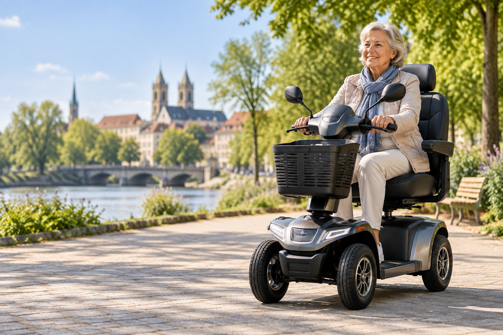

Bedarf klären
Beantworten Sie einige kurze Fragen zu Nutzung, Reichweite und Geschwindigkeit.
Sie suchen ein Elektromobil in Osnabrück und im Osnabrücker Land? Elektromobil Kompass hilft Ihnen bei der Orientierung und kann Ihre Anfrage mit Ihrer Einwilligung an einen passenden Fachanbieter vermitteln.

Reichweite, Geschwindigkeit, Komfort und Transportierbarkeit einfach einordnen.
Unser Schwerpunkt umfasst Osnabrück sowie Belm, Georgsmarienhütte, Wallenhorst, Bramsche und Melle und die weitere Umgebung. Anfragen aus anderen Regionen sind ebenfalls möglich.
Beantworten Sie einige kurze Fragen zu Nutzung, Reichweite und Geschwindigkeit.
Ihre Postleitzahl hilft dabei, Ihre Anfrage regional einzuordnen.
Die Anfrage ist kostenlos und verpflichtet Sie nicht zum Kauf eines Elektromobils.
Für kurze Wege kann ein kompaktes Modell sinnvoll sein. Wer längere Strecken plant, achtet stärker auf Reichweite und Sitzkomfort. Soll das Elektromobil im Auto transportiert werden, kommen außerdem faltbare oder zerlegbare Lösungen infrage.